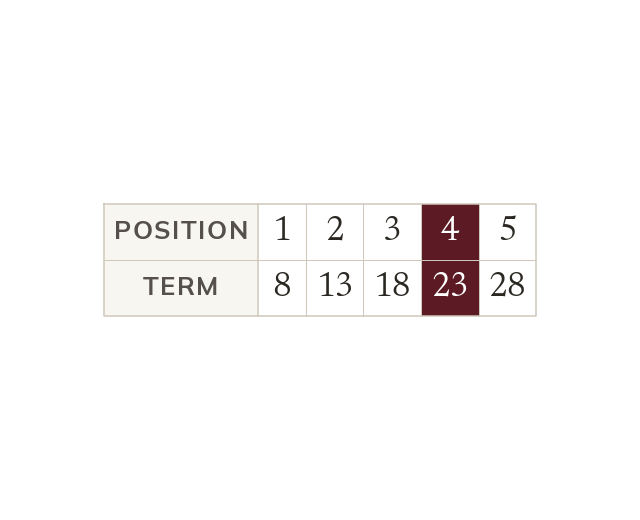

Two ways to describe a sequence
A term-to-term rule reaches each term from the one before. A position-to-term rule, the nth term, uses the position n. So any term can be reached directly.
A sequence can be described in two different ways, and which description you are handed decides how much work a single term costs. A term-to-term rule says how each term is reached from the one before it, so the 50th term can only be reached by passing through the 49 in front of it. A position-to-term rule - the nth term rule - is written in terms of the position number n itself, so any term can be reached directly from its position, with no earlier terms needed. Both describe the same sequence; they differ only in what they take as their starting point.